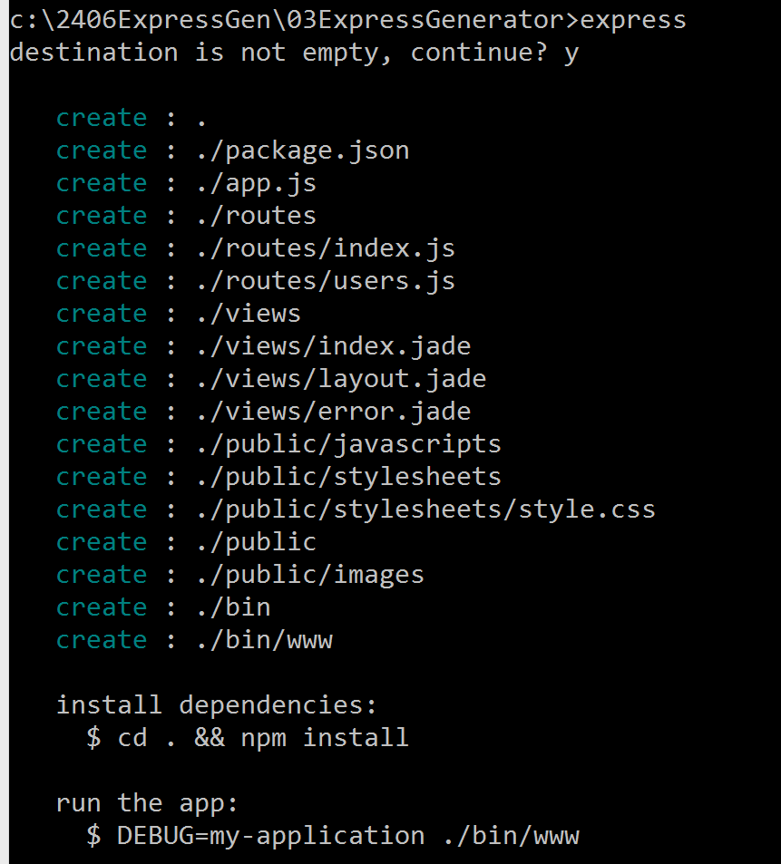

COMP 2406 - Fall 2014 Tutorial #5
Static Server with Node, Express, and Express Generator
© L.D. Nel 2014
Revisions
Description:
The purpose of this tutorial is to get you working with Express and Express Generator. We will build a simple static server using three aproaches:
1)Using Node.js to read files from a choosen directory.
2)Using the npm module express and adding functionallity we need.
3)Using npm module express-generator to generate the framework app and use only the static server portion of it for now.
For each section we will ask you to make a small modification to the code. IMPORTANT: do each of the three questions in its own sub-directory. That way you can keep the code for each problem separate.
IMPORTANT: This tutorial is meant as a homework assignment and for you to demonstrate your results at your tutorial session. You will not be able to complete it if you only start when you come to the tutorial. You will need to read about and learn those aspects of javascript that pertain to this tutorial on your own and come up with a strategy to solve the problems.
To get credit for the tutorial you must complete, or make significant progress on, the exercise problems provided and demonstrate your results to the tutorial TA before you leave the tutorial.
Instructions:
Problem 1) Static Server with Node.js
Note to do these problems you need node.js and npm set up.
Duplicate the directory 01NodeSever found in the demo code. Run the simple static server by executing
node 01_static_node server.js
and then visit the following addresses with your browser:
http://localhost:3000/greeting.html
http://localhost:3000/index.html
http://localhost:3000/table.html
http://localhost:3000/table_css_internal.html
http://localhost:3000/table_css_external.html
These are all files found in the public subdirectory of the 01NodeServer directory.
For table_css_internal.html you should see a table that looks like the following:
However when you visist table_css_external.html you get a table like the following:
Something appears to have gone wrong. More specifically the css style sheet does not appear to have been applied to the table as in the previous example. For this exercise we want you to fix this problem. (Examine the .html files to see how they are set up. one uses css styles within the html file the other uses an external css file.)
Open the 01_static_node server.js file and figure out what the code is doing. Figure out what the problem is and then write some javascript code to fix the problem. (Hint: when the client asks for a css file the server is sending it back as content type 'text/html'. This is problably not appropriate the appropriate MIME type for css files.)
Problem 2)
For problem 2 we are going to use the npm express module to build a simple static server by adding functionally to an "bare bones" express app.
Duplicate the directory 02ExpressServer found in the demo code.
Try and run the server
node 02_express_static_server.js
You should get an error like the following:
The problem is that the express module has not yet been loaded. You could load the module with the command npm install express but instead open the package.json file found with the code and examine it. It should look like the following:
{
"name" : "example1",
"description" : "simple express static server",
"version" : "0.0.1",
"dependencies" : {
"express" : "4.x"
}
}
Notice that it specfies "express" as a dependency. Moreover it specifies that express should be version 4.x meaning any version 4.0 or later. So instead of installing the module with npm install express we will instead use the command:
npm install
This will install all the modules found listed in the dependencies section of the accompanying package.json file. Go ahead and try it and the re-launch the server with:
node 02_express_static_server.js
This time you should be able to visit all pages found in the public sub-directory and they all should work because express is taking are of setting the content type properly for the client.
Open the file 02_express_static_server.js and examine the code:
var express = require('express');
var app = express();
var root_dir = '/public'; //root directory for our static pages
//catch all request an log them using app.all route
app.all('*', function(req, res, next){
console.log('-------------------------------');
console.log('req.path: ', req.path);
console.log('serving:' + __dirname + root_dir + req.path);
next(); //allow next route or middleware to run
});
//use static middleware to implement static server
app.use(express.static(__dirname + root_dir));
app.listen(3000);
console.log('Static Express Server Running at http://127.0.0.1:3000 CNTL-C to quit');
Notice for each request we are printing some information about the request to the console. It looks like this:
This is called logging. There are several npm modules that add loggers to an express application. One of the popular ones is morgan.
For this exercise problem we want you to add the morgan logger to the express application. Here are the steps:
1) Modify the package.json file to add morgan version 1.3.2 to the dependencies and then re-run npm install
{
"name" : "example1",
"description" : "simple express static server",
"version" : "0.0.1",
"dependencies" : {
"express" : "4.x",
"morgan" : "1.3.2"
}
}
2) Modify 02_express_static_server.js and add
var logger = require('morgan'); //request logger
to the file.
3) Above the statement:
//use static middleware to implement static server
app.use(express.static(__dirname + root_dir));
add the statement:
//use morgan logger to keep request log files
app.use( logger('dev'));
Now re-run the server. You should see the logger writing output the console:
The first time you load a file you should see the "200" success code. If you reload a file you will most likely see the "304" code as shown below. What does that mean?

Problem 3)
Finally we want to "auto-magically" generate a complete default express app using the express-generator module. Here we will outline the install instructions. You may have to do some research and tweak these for you own situation.
Note: I'm going to describe this from the point of view of a Windows machine on which the node.exe and npm.cmd binaries were downloaded (as opposed to the full "install button" install of these apps) so this should work on the lab machines. Here we go:
Open an command window where your node.exe and npm.cmd are located.
To install the the express-generator execute:
npm install -g express-generator@4.0.0
The -g option is important and will cause the express module to be loaded "globally" at the same location as where your node.exe and npm.cmd are installed. If you don't you the -g option you are likely to get an error. You should see the following:
(NOTE: For Max OS X and Linux users, if there is an error installing globally, most likely your system
requires root/ administrator rights to write to the folder. In this case, $ sudo npm install -g express-generator@ 4.0.0 might be needed.)
If the install of express-generator is successfull you should see an express.cmd file and an express file located where your node.exe is and within the node_modules located there you should see an express-generator module.
To verify that express-generator is installed execute (note -V must be capital, not -v):
express -V
You should see the output: 4.0.0
Now create a directory for this problem called 03ExpressGenerator, open a command window on that directory. The directory should be empty at this point:
Next create a "vanilla" package.json file by executing
npm init
You will be asked a bunch of questions. The output below shows you my answers.
This will create a package.json file in your previously empty directory. Here is what mine looked like:
{
"name": "03ExpressGenerator",
"version": "0.0.1",
"description": "my first express app",
"main": "index.js",
"scripts": {
"test": "echo \"Error: no test specified\" && exit 1"
},
"author": "L.D.Nel",
"license": "ISC"
}
Now locally install the express module (version 4.1.2) by executing the command:
npm install express@4.1.2 --save
Here the --save options will cause the package.json file to be updated as well so that in the future only an npm install will be required to install your modules:
{
"name": "03ExpressGenerator",
"version": "0.0.1",
"description": "my first express app",
"main": "index.js",
"scripts": {
"test": "echo \"Error: no test specified\" && exit 1"
},
"author": "L.D.Nel",
"license": "ISC",
"dependencies": {
"express": "^4.1.2"
}
}
We now have express installed and the express.exe generator installed. We can now generate an express app. To do so we will execute the express.exe command line tool that will build a default express framework app.
To see the avialable options execute:
express -h
You should see something like the following:
Now generate the framework app by executing:
express
Here is the output:

As you can see it generates a bunch of directories which we will be learning about in the coming weeks.
Now to install the modules needed for the app exectute:
npm install
This should install a bunch of modules including things in your package.json file.
Finally to run the app execute
npm start
or alternatively
node ./bin/www
should work as well.
Once the server is running you can use your browser to visit http://localhost:3000 and you should see:

Congratulations you have a scaffold express app running.
Exercise: Finally. This express app is already set up to serve static pages. It has a public directory already buit. You should now be able to put in there the same files that were being served in the previous questions. Note this public directory has some subdirectories for images, javascript, and css style sheets. So play around with placing your files in the appropriate places until you have this app serving the same static files as in the other two questions and correctly finding the images and css styles.
When you have completed these exercises show your results to the TA's to get credit for the tutorial.